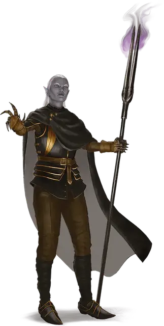

Дроу инквизитор
Drow Inquisitor
Средний Гуманоид (Эльф), нейтрально-злой

Класс Доспеха 16 (кираса)
Хиты 143 (22к8 + 44)
Скорость 30 футов
| мод | спас | ||
|---|---|---|---|
| СИЛ | 11 | +0 | +0 |
| ЛОВ | 15 | +2 | +2 |
| ТЕЛ | 14 | +2 | +7 |
| мод | спас | ||
|---|---|---|---|
| ИНТ | 16 | +3 | +3 |
| МДР | 21 | +5 | +10 |
| ХАР | 20 | +5 | +10 |
Навыки Восприятие +10, Проницательность +10, Религия +8, Скрытность +7
Иммунитет к состояниям испуг
Чувства тёмное зрение 120 футов, пассивное Восприятие 20
Языки Подземный, Эльфийский
Опасность 14 (11500 опыта)
Бонус мастерства +5
Среда обитания Подземье
Особенности
Распознание лжи. . Дроу знает, когда слышит ложь, произносимую другим существом на языке, знакомом ей.
Наследие фей. . Дроу совершает с преимуществом спасброски от очарования, и магия не может его усыпить.
Врождённое колдовство. . Базовой характеристикой инквизитора является Харизма (Сл спасброска от заклинания 18). Он может накладывать следующие заклинания, не нуждаясь в материальных компонентах:
• Неограниченно: пляшущие огоньки [dancing lights], обнаружение магии [detect magic]
• 1/день каждое: подсматривание [clairvoyance], тьма [darkness], обнаружение мыслей [detect thoughts], рассеивание магии [dispel magic], огонь фей [faerie fire], левитация [levitate] (только на себя), внушение [suggestion]
Сопротивление магии. . Дроу совершает с преимуществом спасброски от заклинаний и прочих магических эффектов.
Использование заклинаний. . Дроу является заклинателем 12-го уровня. Её базовой характеристикой является Мудрость (Сл спасброска от заклинаний 18, +10 к атакам заклинаниями). У неё подготовлены следующие заклинания жреца:
• Заговоры (неограниченно): указание [guidance], сообщение [message], ядовитые брызги [poison spray], сопротивление [resistance], чудотворство [thaumaturgy]
• 1 уровень (4 ячейки): порча [bane], лечение ран [cure wounds], нанесёние ран [inflict wounds]
• 2 уровень (3 ячейки): глухота/слепота [blindness/deafness], тишина [silence], божественное оружие [spiritual weapon]
• 3 уровень (3 ячейки): проклятие [bestow curse], рассеивание магии [dispel magic], магический круг [magic circle]
• 4 уровень (3 ячейки): изгнание [banishment], предсказание [divination], свобода перемещения [freedom of movement]
• 5 уровень (2 ячейки): заражение [contagion], рассеивание зла и добра [dispel evil and good], нашествие насекомых [insect plague]
• 6 уровень (1 ячейка): поражение [harm], истинное зрение [true seeing]
Чувствительность к солнечному свету. . Находясь на солнечном свету, дроу совершает с помехой броски атаки, а также проверки Мудрости (Восприятие), полагающиеся на зрение.
Вариант: Призыв Йоклол. У некоторых дроу инквизиторов есть действие, которое позволит им призывать демона.
Призыв демона (1/день). Дроу пытается магическим образом призвать йоклол [yochlol] с шансом на успех 50 %. При проваленной попытке, дроу получает урон психической энергией 5 (1к10). В ином случае, в свободном пространстве на расстоянии 60 футов от призывателя появляется демон, служащий союзником для призывателя, и не может призывать других демонов. Демон призывается на 10 минут, пока он или его призыватель не умрёт, либо пока призыватель, потратив действие, не отпустит его.
Действия
Мультиатака. Дроу совершает три атаки Копьём смерти.
Копьё смерти. Рукопашная атака оружием: +10 к попаданию, досягаемость 5 футов, одна цель. Попадание: 8 (1к6 + 5) колющего урона, плюс 18 (4к8) урона некротической энергией. Максимальное значение хитов цели уменьшается на значение полученного урона от некротической энергии. Это уменьшение сохраняется до совершения целью продолжительного отдыха. Цель погибает, если её максимальное значение хитов уменьшается до 0.
Описание
Дроу всегда ожидают предательства. Ведь в конце концов, Королева Пауков поощряет это. Определённое количество ударов в спину и предательств ещё имеет место быть, но, если их будет слишком много – это подорвёт целое сообщество. Чтобы сохранить подобие порядка и искоренить предателей, жрицы дроу используют инквизиторов. Избранные из рядов духовенства, эти женщины обладают авторитетом, с которым могут сравниться разве что старшие матери знатных домов. Любой, несогласный с иерархией подвергается пыткам и, как правило, мучительная смерть.